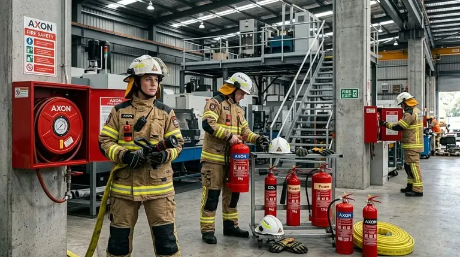
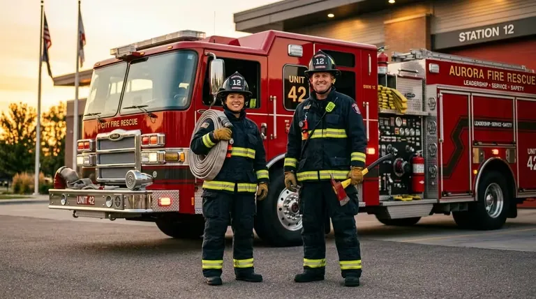

Por qué la elección de marca importa más de lo que parece
En el mercado de EPP para bomberos, elegir marca no es una decisión de marketing. Es una decisión técnica y operacional que tiene consecuencias durante 10 o 15 años —la vida útil típica de un traje estructural o un ERA bien mantenido. La marca determina la disponibilidad de refacciones, la compatibilidad entre generaciones de equipo, el soporte técnico local y los estándares de certificación que aplican.
Esta guía analiza las cuatro marcas que BOMBERO.MX distribuye en México —MSA Safety, Honeywell/Scott, Globe Manufacturing y Bullard— con el objetivo de ayudar a jefes de material, comandantes y responsables de compras a tomar decisiones fundamentadas antes de comprometer presupuesto en equipamiento que estará en servicio por una década.
MSA puede tener el mejor ERA de una generación. Globe puede tener el mejor traje. Bullard puede tener la mejor cámara termográfica. La selección óptima para un cuerpo de bomberos puede incluir marcas distintas para categorías distintas, lo que hace al distribuidor multi-marca la opción más estratégica.
MSA Safety: el estándar en respiración y protección de la cabeza
MSA Safety — Mine Safety Appliances Company
Posición en el mercado: Proveedor global líder de equipos de seguridad para minería, bomberos, construcción y petroquímica. Presente en más de 140 países.
Certificaciones: NFPA 1971 (cascos), NFPA 1981 (ERA), NIOSH, CE, EN 136, EN 137, UL Listed.
- ERA G1 SCBA — uno de los ERA certificados NFPA 1981 más avanzados del mercado
- Cascos Cairns 1010 y 1836 — estándar norteamericano de casco de bombero
- Cascos GALLET F1 XF — perfil europeo, adoptado en Europa y América Latina
- Detectores de gas Altair — portátiles para detección de gases peligrosos en incendios
El ERA G1 SCBA: por qué es el punto de referencia del mercado
El aparato de respiración autónoma MSA G1 representa el estado del arte en ERA para bomberos. Sus características técnicas más relevantes para cuerpos de bomberos en México:
- Máscara G1 panorámica: campo visual superior al 180° gracias a la visor envolvente de policarbonato. La máscara sella sobre la cara con silicona y tiene certificación NIOSH.
- Válvula de demanda de presión positiva: mantiene presión positiva dentro de la máscara en todo momento, impidiendo la entrada de gases contaminantes incluso si el sello facial se ve comprometido momentáneamente.
- PASS integrado: el dispositivo de alarma de actividad personal está integrado al arnés, activándose automáticamente al montar el ERA y emitiendo alarma sonora + visual si el bombero permanece inmóvil.
- HUD (Head-Up Display): indicador de presión en el ojo de la máscara, visible sin bajar la vista. Permite al bombero monitorear su nivel de aire sin interrumpir la operación.
- Cilindros de 30, 45 y 60 minutos de autonomía (dependiendo del cilindro seleccionado).
- Conectividad opcional: modelos con comunicación por radio integrada y telemetría de presión en tiempo real al mando de operaciones.
Cascos Cairns: el casco de bombero más reconocido en México
Los cascos Cairns tienen una presencia histórica en los cuerpos de bomberos mexicanos. El diseño tradicional de perfil norteamericano (ala trasera prominente) con visor integrado y protección nucal es familiar para generaciones de bomberos. El Cairns 1010 es el modelo de mayor volumen de ventas, mientras el 1836 representa la versión de mayor protección térmica para operaciones de alto riesgo.
¿Cuándo elegir MSA?
MSA es la elección natural cuando el cuerpo de bomberos prioriza: la última tecnología en ERA, integración de telemetría y comunicaciones en la configuración del ERA, o cuando ya tiene una base instalada de equipo MSA y busca compatibilidad hacia adelante.
Honeywell / Scott Aviation: el ERA con mayor base instalada en México
Honeywell Safety Products / Scott Aviation (ex Scott Health & Safety)
Posición en el mercado: Scott era la marca de ERA de mayor penetración histórica en bomberos mexicanos. La adquisición por Honeywell fortaleció el soporte técnico global.
Certificaciones: NFPA 1981, NIOSH, EN 137, CE, UL Listed.
- ERA Scott Air-Pak X3 Pro — el ERA de mayor historia en cuerpos de bomberos mexicanos
- Máscaras AV-3000 SureSeal — sello facial adaptable a diferentes perfiles faciales
- Detectores de gas BW Clip — clip-on de uso industrial y bomberos
- Monitores MultiRAE — detección multi-gas para HAZMAT
Scott Air-Pak X3 Pro: compatibilidad con la base instalada
Muchos cuerpos de bomberos municipales en México tienen décadas de historial con ERA Scott. Los cilindros, máscaras y refacciones de generaciones anteriores son reconocibles para su personal técnico. La X3 Pro mantiene compatibilidad de cilindros con versiones anteriores, lo que permite una transición gradual de flota en lugar de una sustitución total.
- Ergonomía probada: el arnés de espalda distribuye el peso del ERA de forma que los bomberos que ya conocen Scott reconocen como familiar.
- Máscara AV-3000 SureSeal: sistema de sello adaptable con membrana de silicona que se ajusta a diferentes anchos de mandíbula y pómulos, reduciendo el problema de ajuste incorrecto que es la causa más frecuente de pérdida de sello.
- Display integrado: manómetro digital en el arnés visible en campo.
- Red Alert PASS: dispositivo PASS integrado con alarma audible de 95 dB.
¿Cuándo elegir Honeywell/Scott?
Scott es la elección lógica para cuerpos que ya tienen ERA Scott en servicio y buscan: nueva generación compatible con cilindros existentes, máscaras de reposición intercambiables con el inventario actual, o reducción del costo de recapacitación al mantener una plataforma familiar para el personal.

Globe Manufacturing: el especialista en trajes estructurales
Globe Manufacturing Co.
Posición en el mercado: Manufacturer 100% especializado en trajes de bombero. Ningún otro producto. Esta especialización se traduce en la mayor profundidad técnica del mercado para trajes estructurales.
Certificaciones: NFPA 1971 (estructural y proximidad), NFPA 1977 (wildland), UL Classified.
- Traje G-Xtreme — máxima protección térmica, para operaciones de alto riesgo
- Traje G-Supreme — equilibrio entre protección y peso para operaciones estándar
- Traje Supreme AT — versión de menor peso para intervención técnica y rescate
- Trajes de proximidad — para ARFF y petroquímica
El sistema de tres capas Globe y por qué importa el diseño
Todo traje estructural NFPA 1971 tiene tres capas, pero la ejecución de ese sistema determina la diferencia entre un traje que dura 5 años y uno que dura 10 en condiciones de uso real. Globe ha patentado varias tecnologías en el diseño de sus sistemas de tres capas:
- Shell exterior: Globe usa materiales Nomex, PBI Gold y Kevlar en distintas combinaciones según el modelo, con costuras externas de hilo resistente al calor. El shell exterior es la primera barrera contra la llama y el calor radiante.
- Barrera de humedad (moisture barrier): Globe usa membranas Gore CROSSTECH en sus modelos premium — la barrera de humedad más conocida del mercado, con historial de desempeño verificado en temperatura extrema. Impide que el agua o líquidos penetren al traje mientras permite la transpiración del bombero.
- Liner térmico (thermal barrier): El componente más crítico para la protección térmica. Globe usa materiales Caldura, Prism y TDI (Thermal Defense Innovations) en distintos modelos. Un liner térmico de mayor espesor ofrece mejor protección pero mayor peso y menor flexibilidad.
Ergonomía Globe: por qué sus trajes mueven bien
El factor diferenciador más frecuentemente citado por bomberos que usan Globe es la ergonomía. Globe ha invertido décadas en el diseño de costuras y paneles que permiten al traje moverse con el bombero en lugar de restringirlo. Paneles de corte articulado en las rodillas, codos y hombros permiten que el traje mantenga su forma de protección incluso en posturas de rescate extremas.
¿Cuándo elegir Globe?
Globe es la elección cuando el cuerpo de bomberos prioriza: máxima protección en trajes estructurales, ergonomía que reduce la fatiga del bombero en operaciones largas, o operaciones de proximidad y ARFF que requieren trajes especializados.
Bullard: la cámara termográfica y el casco integrado
Bullard
Posición en el mercado: Referencia en cascos de alta temperatura y en cámaras termográficas integradas al casco. El concepto "cámara en el casco" fue popularizado por Bullard.
Certificaciones: NFPA 1971 (cascos), NFPA 1981 (ERA), UL Listed.
- Cámara termográfica TXS — portátil, operación con una mano
- Cámara termográfica Eclipse — integrada al casco, manos libres
- Casco USTERM — estructural para temperaturas extremas
- ERA Stentor — ERA de perfil bajo para espacios confinados
Cámaras termográficas para bomberos: por qué son hoy equipo estándar
La cámara termográfica (TIC — Thermal Imaging Camera) ha pasado de ser equipo especializado de unidades de rescate a ser equipo estándar en cuerpos de bomberos profesionales. Las razones son múltiples:
- Búsqueda de víctimas: En un edificio lleno de humo, la visión humana es inútil a distancias mayores de 30 cm. La cámara termográfica detecta el calor corporal de una víctima inconsciente a través del humo desde varios metros de distancia.
- Localización de foco de incendio: La cámara muestra exactamente dónde está el mayor calor —detrás de una pared, en un plafón, en un cuarto contiguo— permitiendo al bombero dirigir el ataque correctamente.
- Detección de extensión oculta: Los incendios en estructuras antiguas frecuentemente se extienden entre paredes y pisos antes de hacerse visibles. La termografía detecta la anomalía de calor antes de la aparición de llama o humo en el espacio secundario.
- Seguridad del bombero: La cámara ayuda al bombero a orientarse dentro del edificio y a detectar rutas de egreso bloqueadas por calor antes de comprometerse con ellas.
TXS vs Eclipse: portátil vs integrado al casco
| Característica | Bullard TXS (portátil) | Bullard Eclipse (casco integrado) |
|---|---|---|
| Manos libres | No — requiere una mano | Sí — integrada al casco |
| Visualización | Pantalla en el cuerpo de la cámara | Visor integrado al casco (frente a ojo) |
| Uso compartido | Puede pasarse entre bomberos | Asignada al casco individual |
| Costo por unidad | Menor | Mayor (casco + integración) |
| Operación bajo estrés | Requiere atención visual activa | Más natural — visión aumentada |
| Ideal para | Equipos reducidos, flexibilidad | Unidades de búsqueda y rescate especializadas |
¿Cuándo elegir Bullard?
Bullard es la elección cuando el cuerpo de bomberos quiere incorporar o actualizar sus cámaras termográficas (especialmente el sistema integrado al casco para unidades de búsqueda y rescate), o cuando busca cascos de alta temperatura para operaciones en ambientes extremos.
Cuadro comparativo: qué marca elegir por categoría
| Categoría | Primera opción | Alternativa sólida | Criterio de decisión |
|---|---|---|---|
| ERA (SCBA) | MSA G1 | Honeywell Scott Air-Pak X3 Pro | Base instalada existente; capacidad de telemetría requerida |
| Casco estructural | MSA Cairns (perfil norteamericano) | Bullard USTERM (alta temp.) | Temperatura máxima de la operación; preferencia de estilo |
| Traje estructural completo | Globe G-Xtreme / G-Supreme | — | Globe no tiene competidor directo en su especialización |
| Traje de proximidad (ARFF) | Globe (proximidad) | — | Especificación NFPA 1971 proximidad requerida |
| Cámara termográfica | Bullard TXS (portátil) | Bullard Eclipse (casco integrado) | Manos libres requeridas vs. costo |
| Detección de gas | MSA Altair / Honeywell BW Clip | — | Tipo de gas a detectar; integración con ERA |
Cómo BOMBERO.MX facilita la selección multi-marca
Una de las objeciones más frecuentes al modelo multi-marca es la gestión: ¿cómo un cuerpo de bomberos gestiona refacciones, mantenimiento y soporte técnico para equipo de cuatro fabricantes distintos? BOMBERO.MX resuelve esta complejidad actuando como interlocutor único.
El proceso de trabajo con BOMBERO.MX para selección de equipo multi-marca sigue esta secuencia:
- Diagnóstico del equipo existente: BOMBERO.MX evalúa el estado, marcas y antigüedad del equipo en servicio del cuerpo.
- Identificación de prioridades: Se determina qué categorías de equipo requieren actualización inmediata y cuáles pueden continuar en servicio.
- Propuesta técnica por categoría: Para cada categoría a adquirir, BOMBERO.MX presenta las opciones disponibles con especificaciones técnicas, certificaciones y comparativa.
- Configuración óptima: Se define la combinación de marcas que mejor responde al perfil operacional, presupuesto y base instalada del cuerpo.
- Suministro y documentación: BOMBERO.MX gestiona el suministro de todas las marcas, con documentación técnica consolidada en un solo expediente.
- Capacitación y soporte: Capacitación de uso y mantenimiento bajo NFPA 1851, con soporte técnico continuado.